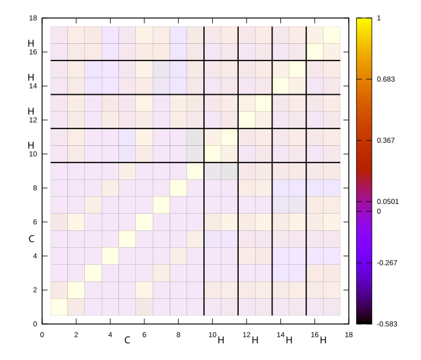
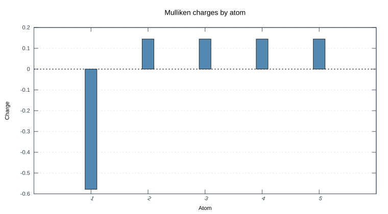

This document is rendered by Pandoc. The Gaussian code block is executed by Quantum Analyzer, and the generated Markdown replaces the block in the final report.
The example uses one methane calculation and produces two figures: an atom-grouped overlap heatmap and a Mulliken charge bar chart.
Input file: examples/fixtures/methane_6-31g.log
Basis: 6-31G, basis size: 17
Tr(P*S): 10.0000
| Atom | Z | Mulliken charge |
|---|---|---|
| 1 | 6 | -0.5781 |
| 2 | 1 | 0.1445 |
| 3 | 1 | 0.1445 |
| 4 | 1 | 0.1445 |
| 5 | 1 | 0.1445 |

